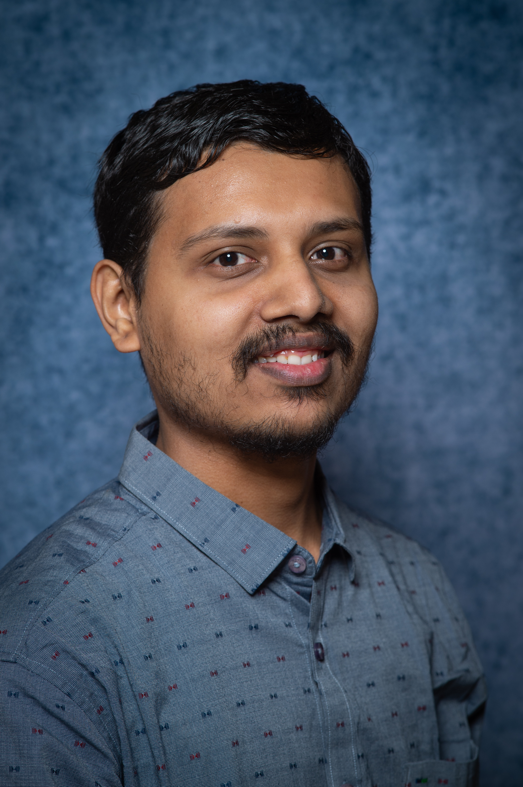

|
Abhishek Ramanathapura Satyanarayana
Email /
Resume /
Github /
HuggingFace /
LinkedIn /
Coursera /
Certifications /
Blogs
Hello fellow human! In a world of bots, crawlers, and AI, if you are reading this, welcome!
Professional Summary
I am a growing AI engineer with deep interests in the domains of AI,
Machine Learning, Deep Learning, Computer Vision, and Data Science.
I am a motivated, talented, hardworking, and fast-learning professional.
I have a long-term goal of contributing towards improving
the various aspects of human lives and the environment through
continuous development and deployment of AI, ML, and data-driven applications
by adding value to all stakeholders, that has a significant impact on the real-world.
Currently, I am working as Data Scientist - 2 at SatSure.
I am working on leveraging remote sensing and geospatial data for developing and deploying
data-driven AI, ML, DL, CV products and solutions for diverse use cases for earth observation.
During my second year in my Master's at University of Groningen, I worked as a Teaching Assistant
for the following courses - Introduction to Data Science, Cognitive Robotics, Deep Learning,
Computer Vision, and Handwriting Recognition.
I also interned as a Summer AI Intern at Tata Steel Europe. During the internship, I worked on
supervised and unsupervised methods for surface steel defect identification. I was part of a team
that delivered a production-ready steel surface defect classification model and a PoC for the
unsupervised method. Our team
won the award for Solving the Most Valuable Problem .
Previously, I worked as a Machine Learning Research Associate in the Autonomy team
at Ati Motors. Ati Motors is
on a quest to build autonomous cargo vehicles to be deployed in
factories, warehouses, manufacturing plants etc. At Ati, I worked
on continuous prototyping, research, development, and deployment of
Machine Learning, Robot Perception, and Computer Vision solutions.
Other Interests
I usually spend my free time doing one of the following - playing badminton, playing chess,
listening to music, watching technology videos and interesting podcasts, going for walks.
|

|